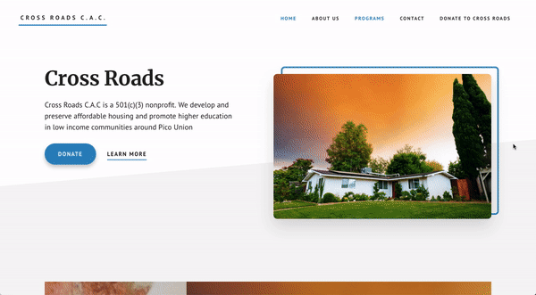

// problem
— Unnecessary content that clutters the page
— Poor display of offered programs
— Image sizing is not standardized
// goals & edits
— Remove excess images and standardize font styles and sizing of program images
— Redesign cleaner navbar with Cross Roads logo and more emphasized donate button
— Position landing page sections to fit entire screen with less scrolling
— Create more efficient use of whitespace for cleaner interface